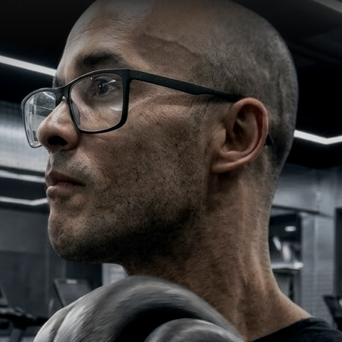

1
2
3
4
A menopausa
não leva só o
estrogênio
Leva músculo e osso junto, se você deixar.
Sem treino de força
Com treino de força
ARRASTE
Ilustração esquemática do corte transversal da coxa.
FATO 1
O escudo caiu
CHECK O estrogênio protege osso e músculo
CHECK Na menopausa, ele despenca
CHECK Não é preguiça:
é fisiologia
Estrogênio
Estudo SWAN: Greendale et al., J Bone Miner Res 2012. Gráfico esquemático.
FATO 2
Osso e músculo
em queda
CHECK A gordura
acelera
CHECK A massa magra
cai
CHECK A balança nem mexe
−7,4%
de densidade óssea da coluna em ~3 anos de transição
+63%
de risco de fratura em quem perde mais massa magra
Osso e músculo
Estudo SWAN: Greendale et al., JBMR 2012 e JCI Insight 2019 · Shieh et al., JBMR 2023.
A VIRADA
Musculação pesada
fortalece o osso
CHECK Mulheres com osteopenia e osteoporose
CHECK 2x por semana, 30 minutos
CHECK Carga alta e
supervisionada
Musculação
Ensaio LIFTMOR: Watson et al., J Bone Miner Res 2018 (101 mulheres, 65 anos em média).
BÔNUS
Menos calorão,
sono melhor
CHECK 15 semanas de musculação
CHECK 3x por semana, carga progressiva
CHECK Músculo é órgão:
conversa com o corpo
Ondas de calor moderadas a intensas
Musculação
−44%
Sem treino
−2%
Sintomas
Berin et al., Maturitas 2019 e Climacteric 2022 · Severinsen & Pedersen, Endocr Rev 2020.

MUSCULAÇÃO
+ CARGA PROGRESSIVA
+ PROTEÍNA
+ ACOMPANHAMENTO
= FORÇA
COMENTE FORTE
que eu te chamo no direct
Envelhecer é inevitável. Perder força, não.
Proteína: Bauer et al., JAMDA 2013 (PROT-AGE). Conteúdo educativo: procure liberação médica.